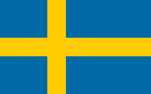

Państwo w Europie Północnej, zaliczane do państw skandynawskich. Szwecja jest członkiem Unii Europejskiej od 1995 roku. Z około 10,3 mln mieszkańców jest najludniejszym krajem skandynawskim. Graniczy z Norwegią, Finlandią oraz z Danią przez most nad cieśniną Öresund.
Szwecja podzielona jest na 21 regionów administracyjnych (szw. län). Regiony te dzielą się na 290 gmin (kommuner).
| Powierzchnia |
Ludność |
PKB / os |
Waluta |
| 450 295 km² |
10 327 789 os |
53 867 USD |
Korona szwedzka |
Zobacz więcej!